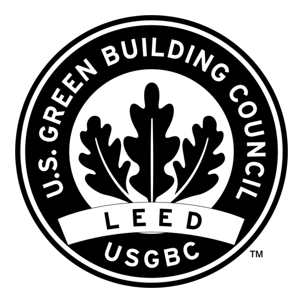

Uzun Vadeli Performans.
Enerji ihtiyacının azaltılmasında bina yönelimi, güneş kontrolü, ısı yalıtımı ve hava sızdırmazlığı birlikte ele alınır; aktif sistemler hesaplanan yüklere göre seçilir.
İşletme emisyonları; enerji tüketimi, enerji kaynakları ve emisyon faktörleri üzerinden değerlendirilir. Soğutucu akışkan kayıplarının iklim etkisi ayrıca dikkate alınır.
Taşıyıcı sistem, yapı kabuğu ve kaplama seçenekleri; eşdeğer işlev ve performans koşullarında, karşılaştırılabilir ürün verileri ve yaşam döngüsü kapsamları üzerinden değerlendirilir.
Isıtma ve soğutma yükleri, eşzamanlılık ve kısmi yük verimleri birlikte değerlendirilir; ekipman kapasiteleri kullanım profiline göre belirlenir.
Enerji tasarımı, Binalarda Enerji Performansı Yönetmeliği ve projeye uygulanacak TS 825 hükümlerine dayanır; uygulama ve devreye alma kontrolleriyle izlenir.
Su verimli armatür ve rezervuar seçimi, kullanım ihtiyacıyla birlikte değerlendirilir. Sayaçlama, tüketimin izlenmesini ve olağan dışı kullanımların tespitini destekler.
Bitkiler yerel iklime uygun seçilir; sulama bölgeleri bitki ihtiyacı, güneşlenme ve toprak koşullarına göre düzenlenir. Sulama, yağış ve toprak nemi dikkate alınarak planlanır.
Yüzey akışı; zemin, yeraltı suyu, temel ve altyapı koşullarına göre geçirimli yüzeyler, biriktirme ve kontrollü tahliye çözümleriyle yönetilir.
Yağmur suyu ve gri su; kaynağa uygun arıtma, ayrı tesisat ve kalite koşullarıyla, yalnızca mevzuatın izin verdiği kullanımlar için değerlendirilir. Zorunlu sistemler proje kapsamına dâhil edilir.
İncelemek için bir nokta seçin
Plan derinliği, pencere konumları, ışık geçirgenliği ve gölgeleme; yeterli gün ışığı, kamaşma kontrolü ve aşırı güneş kazançlarının sınırlandırılması için birlikte değerlendirilir.
Isı yalıtımı, hava sızdırmazlığı, güneş kontrolü ve ısıl zonlama; yüzey sıcaklıkları, hava hareketleri ve aşırı ısınma riskiyle birlikte ele alınır.
Havalandırma debileri, filtrasyon ve düşük emisyonlu ürün seçimi birlikte değerlendirilir; yapım sırasında nem, toz ve kirletici kaynaklarını sınırlayan uygulamalar esas alınır.
Hava doğuşlu ve darbe sesi yalıtımı; ayırıcı elemanlar, esnek katmanlar, birleşimler, tesisat geçişleri ve yanal iletim yollarıyla birlikte, ilgili yönetmelik gereklerine göre değerlendirilir.
Isıl konfor, akustik performans, görsel konfor ve iç hava kalitesi; projeye özgü tasarım ölçütleri ve uygun değerlendirme yöntemleriyle ele alınır.
Parsel planlamasında yapı oturumu, mevcut bitki ve toprak varlığı, açık alanlar ve yağmur suyu yönetimi; imar koşulları ve altyapıyla birlikte değerlendirilir.
Bir etki alanı seçin
İşletme enerjisi, soğutucu akışkanlar, malzemelerin gömülü karbonu ve ulaşım kaynaklı emisyonlar; binanın yaşam döngüsü boyunca ele alınır.
Sağlık, konfor, iklim risklerine dirençlilik, erişilebilirlik ve kapsayıcılık; bina kullanıcıları ve çevredeki topluluklar açısından birlikte değerlendirilir.
Arsa kullanımı, su, habitatlar ve malzeme kaynaklı etkiler; çevresel bozulmanın sınırlandırılması ve ekosistemlerin iyileştirilmesi amacıyla değerlendirilir.
U.S. Green Building Council tarafından geliştirilen LEED, sertifikasyonu GBCI tarafından yürütülen gönüllü bir yeşil bina değerlendirme sistemidir. Projeye uygun sürüm ve kapsam esas alınır; sertifikasyon, ilgili ön koşulların ve puan gerekliliklerinin karşılanmasına bağlıdır. LEED değerlendirmesi, Türkiye’deki zorunlu mevzuat hükümlerinin yerine geçmez.
Enerji, su, malzeme ve iç çevre kalitesi ölçütleri; mimari ve mühendislik kararları, yapım kontrolleri, bakım ve işletme gereksinimleriyle birlikte ele alınır.

Nova Konut İnşaat Yatırım A.Ş.; İstanbul’daki konut projelerinde çevresel performans ölçütlerini mimari, mühendislik, malzeme seçimi ve yapım süreçleriyle birlikte ele alır.